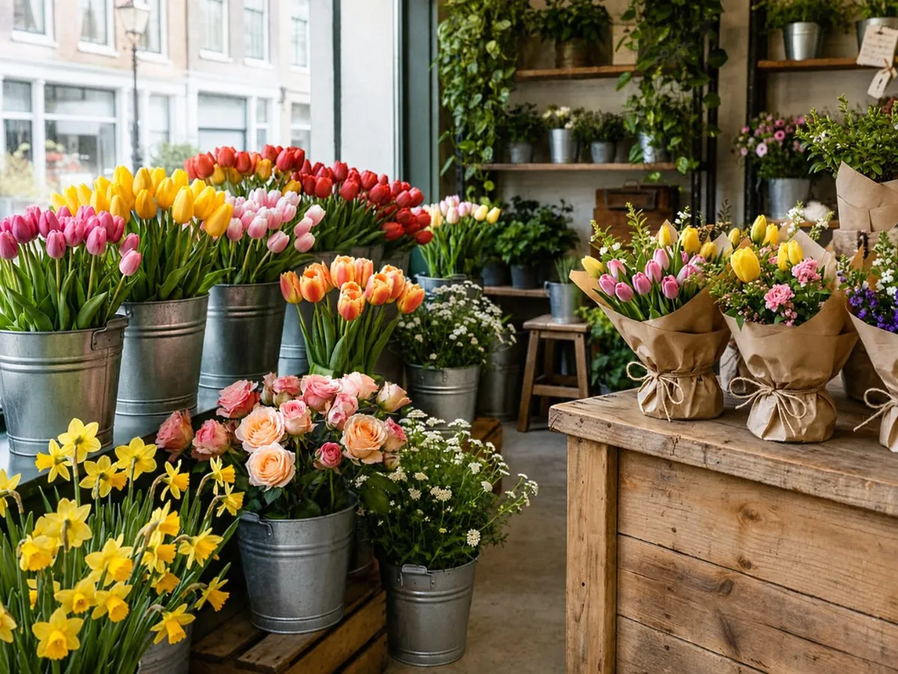

Bloemist in Nijmegen: een goede bloemenwinkel in jouw wijk
Bijgewerkt op 22 november 2026.
Even snel een bos bloemen halen doe je het liefst om de hoek. Daarom zetten we per wijk de bloemisten op een rij die wij aanraden. We zetten er ook bij wie op zondag open is, en wie dezelfde dag bezorgt.

Zo hebben we gekozen
We lazen in november 2026 de websites van de bloemisten in onze bedrijvengids. Per wijk kozen we de winkels die wij aanraden. De meeste maken ook bruids- en rouwbloemwerk en hebben een bloemenabonnement.
Bij het station en het centrum
Flowers Insight: elke dag van het jaar open
Op het Stationsplein maken de bloemisten hun boeketten met de hand, van uitbundig tot ingetogen. Je kunt kiezen voor boeketten met gecertificeerde bloemen, en de winkel heeft een gouden keurmerk als duurzame bloemist.
Flowers Insight is elke dag van het jaar open. Bestel je vóór twaalf uur, dan bezorgen ze dezelfde dag, binnen het eigen gebied ook op zondag.
Goed voor: op het laatste moment iemand verrassen.
Krayenhoff: bloemist sinds 1892
Aan de Krayenhofflaan zit al sinds 1892 een bloemenwinkel. Sinds 1998 runnen Joost en Tanja Weijtens de zaak.
Je vindt er snijbloemen, kamerplanten en zijden bloemen. Ze zijn gespecialiseerd in rouwbloemwerk, en je kunt er een workshop bloemschikken volgen.
Goed voor: rouwwerk en een workshop.
Nijmegen-Oost
Het Molentje: bloemen en een klein tuincentrum
Aan de Berg en Dalseweg runnen broer en zus Richard en Lindsey een zaak van zo'n duizend vierkante meter, tussen bloemenwinkel en tuincentrum in. Ze kopen 's ochtends zelf in op de veiling.
Planten krijgen regenwater, en ze bezorgen met een elektrische auto. In het voorjaar en in december zijn ze ook op zondag open.
Goed voor: bloemen en planten voor je balkon.
Bellis Bloemwerk: de kiosk aan de Groenestraat
In de bloemenkiosk aan de Groenestraat kun je ook op zondag van tien tot twee terecht. Het aanbod wisselt met wat er op dat moment bloeit.
Bellis maakt ook bruids- en rouwbloemwerk, en bezorgt in heel Nijmegen.
Goed voor: een bos bloemen op zondagochtend.
Nijmegen-West
Bloemenveld XL: veel keus, vers van de veiling
Aan de Fenikshof gaan ze meerdere keren per week naar de veiling, en ze kopen ook direct bij kwekers. Online kies je een plukboeket of rouwbloemwerk.
Bestel je vóór twaalf uur, dan bezorgt de eigen bezorgdienst dezelfde dag in Nijmegen en omgeving.
Goed voor: een grote keus aan verse bloemen.
Hatert en Dukenburg
Bloembinderij Hatert: veldbloemen en losse stelen
In winkelcentrum Hatert werken ze met wat het seizoen brengt: veldbloemen, losse stelen en spontane combinaties. De ene week tulpen, de andere week dahlia's.
Voor thuis of op kantoor neem je een abonnement met elke week een vers boeket.
Goed voor: wie houdt van een losse, natuurlijke bos.
Boeketterie Meijhorst: al sinds 1972
In de wijk Meijhorst zit al sinds 1972 een bloemenwinkel waar ze boeketten op maat maken, voor jouw wens en budget.
Ze maken ook het bruidsboeket en rouwwerk, en bezorgen in de regio en via een landelijk netwerk ook verder weg.
Goed voor: een boeket op maat.
Nijmegen-Noord en Lent
Intens Bloemen: nieuw in Nijmegen-Noord
Sinds januari 2025 zit Intens Bloemen ook aan de Jonagoldstraat, vlak bij Oosterhout. De bloemen worden elke dag vers ingekocht.
Je komt er ook voor kamerplanten en vazen. Ze bezorgen in heel Nijmegen en Lent.
Goed voor: wie in de Waalsprong woont.
Bloei: Nederlandse bloemen en lokale makers
Aan het Oranje Marieplein vind je bloemen, planten en vazen, en veel spullen van lokale makers, zoals keramiek en bloemenkransen.
In de zomer komen de bloemen rechtstreeks van Nederlands land, biologisch en zonder gif. Bloei is open van dinsdag tot en met zaterdag.
Goed voor: wie seizoensbloemen zonder gif wil.
Ook goed
- Kleine Zwaan: seizoensbloemen van kleine kwekers uit de buurt, met zo min mogelijk verpakking.
- Pioenrozen van het veld haal je in het voorjaar bij kwekerij Braam in Oosterhout, met een kraam met zelfbediening op de inrit.
- Liever bloemen die nooit verwelken? Bij KunstmetBloemen huur je een boeket zijden bloemen dat elk seizoen wordt gewisseld.
Onze eerdere tips staan in bloemist in Nijmegen: de leukste bloemenwinkels.
Meer in onze gids winkelen in Nijmegen.
Veelgestelde vragen
Welke bloemist in Nijmegen is op zondag open?
Flowers Insight op het Stationsplein is elke dag open. De kiosk van Bellis aan de Groenestraat is op zondag van tien tot twee open, en Het Molentje in het voorjaar en in december.
Welke bloemist bezorgt dezelfde dag?
Bij Flowers Insight en Bloemenveld XL wordt je boeket dezelfde dag bezorgd als je vóór twaalf uur bestelt.
Wat is de oudste bloemist van Nijmegen?
Krayenhoff aan de Krayenhofflaan bestaat sinds 1892.
Waar koop je duurzame bloemen in Nijmegen?
Bloei in Lent en Kleine Zwaan verkopen seizoensbloemen van Nederlandse kwekers. Flowers Insight heeft een keurmerk als duurzame bloemist.